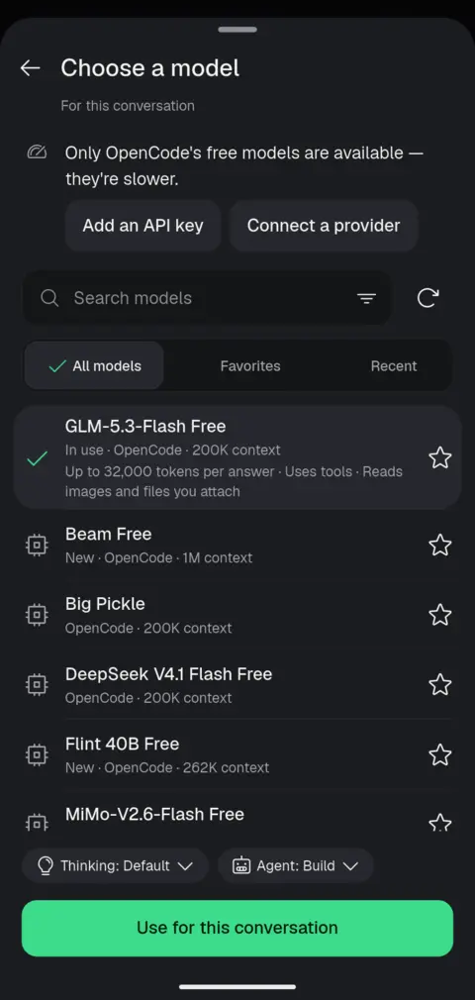
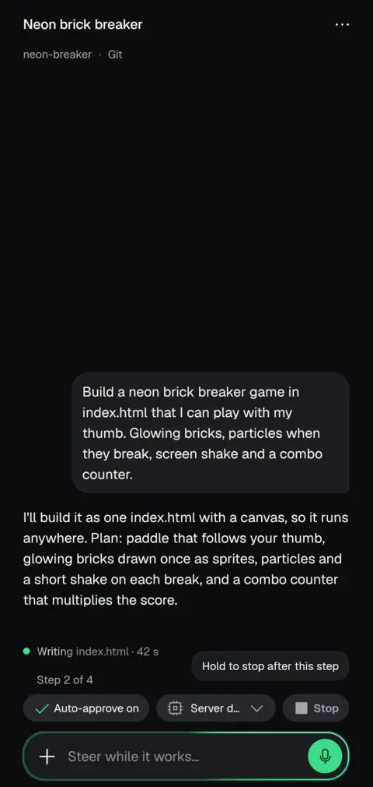
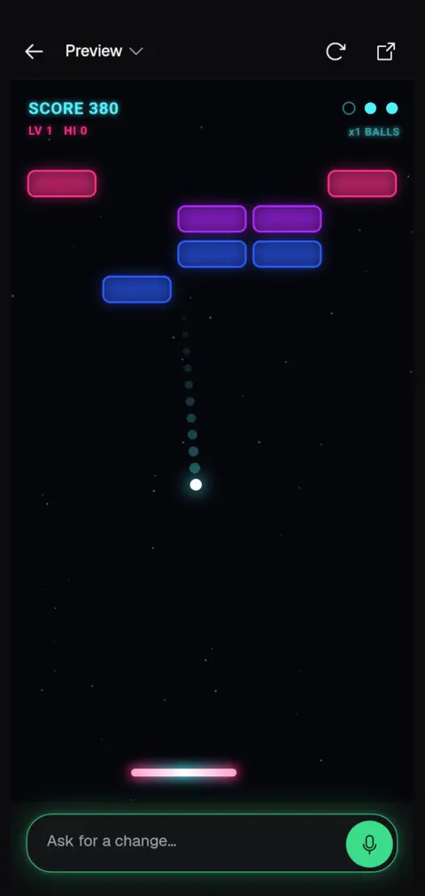

Unofficial, not affiliated with OpenCode, Anthropic, OpenAI or Google.
OpenCode on Android
OpenCode Mobile is an independent Android client and runner for OpenCode. It can install OpenCode inside the app on your phone, or connect to an OpenCode server you already run on a computer.
What it does
You chat with OpenCode, approve what it wants to run, steer it mid-task, and review the diff, all from the phone. Tap a localhost link and the dev server it started opens in an in-app preview. A full terminal and Git are in the same place.
OpenCode's own free models work without an API key, so you can try it with nothing to sign up for. Add a provider key later for bigger models.
How setup works
- Install the APK from GitHub Releases.
- Either follow the guided on-phone setup (Ubuntu, Git, Node and OpenCode, about 210 MB), or on your computer run
opencode2 pairand scan the QR code, or type its address. - Start a conversation, pick a model and describe the change.
The app supports OpenCode 2 only; OpenCode 1 is no longer supported.
Limits to know
- Android 8 or newer; the built-in Linux needs a 64-bit phone.
- Installed from an APK, not the Play Store.
- This is not the official OpenCode app and is not made by the OpenCode team. Thanks to them for the agent it is a window onto.
- Plain HTTP servers need an explicit yes per server; use them only on a network you trust.
Download
Version 2.1.0 (build 57). Free and open source under the MIT license. Most phones want arm64-v8a.
- arm64-v8a APK (most phones)
- Universal APK (works everywhere, larger)
- armeabi-v7a APK (older 32-bit phones; no on-phone Linux)
- All releases on GitHub
- Add to Obtainium to get updates


